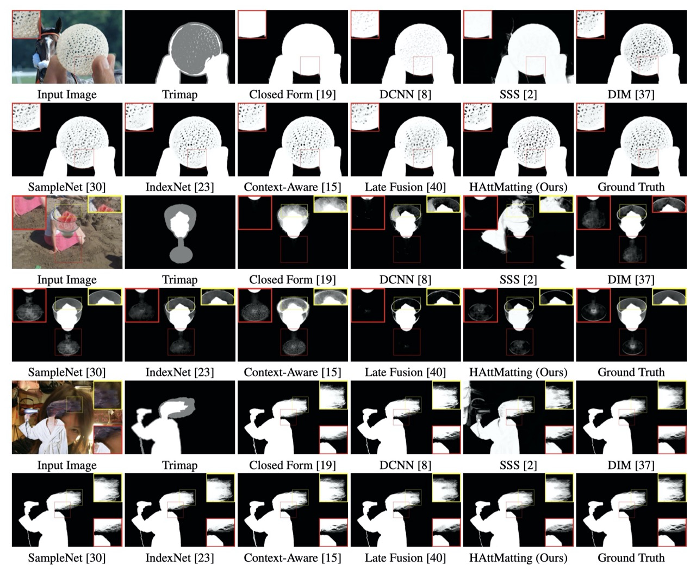

|
Image Matting
|
|
Matting refers to the process of extracting foreground
object from an image. Matting is an important task in image
and video editing. Matting tasks usually produces a "matte"
that can be used to separate foreground from the background
in a given image. Matte can also used to combine a given
foreground on a different background to produce new
plausible image. Image matting is a practical and heavily
applied technique in image recognition, useful both on its
own and as an intermediate stage in image and video
processing.
In this project, we are developing techniques to process
Image Matting problems. Our research is to address this
problem from two directions. The first is to consider how to
solve the alpha matte form user-interactive manners. The
second is to investigate how to extract accuract Alpha Matte
in an end to end fashion while do not use any other auxilary
information, such as trimap、scribble. etc.
|
|
Attention-Guided Hierarchical Structure
Aggregation for Image Matting
[paper] [suppl]
[code] [dataset] [media]
Yu Qiao* , Yuhao Liu*, Xin
Yang†, Dongsheng Zhou, Mingliang Xu,
Qiang Zhang, Xiaopeng Wei
Proc. IEEE CVPR (CCF A), June 2020
|
|

Overview of proposed framework.
|
|

Visual comparison of our results with
those of the state-of-the-art methods.
Please zoom in to see the details.
|
|
|
Input-Output:
Given an input RGB image, our
network directly
produces an Alpha Matte without any auxilary
information.
Abstract.
Existing deep learning based matting algorithms
primarily resort to high-level semantic features to
improve the overall structure of alpha mattes.
However, we argue that advanced semantics extracted
from CNNs contribute unequally for alpha perception
and we are supposed to reconcile advanced semantic
information with low-level appearance cues to refine
the foreground details. In this paper, we propose an
end-to-end Hierarchical Attention Matting Network
(HAttMatting), which can predict the better
structure of alpha mattes from single RGB images
without additional input. Specifically, we employ
spatial and channel-wise attention to integrate
appearance cues and pyramidal features in a novel
fashion. This blended attention mechanism can
perceive alpha mattes from refined boundaries and
adaptive semantics. We also introduce a hybrid loss
function fusing Structural SIMilarity (SSIM), Mean
Square Error (MSE) and Adversarial loss to guide the
network to further improve the overall foreground
structure. Besides, we construct a large-scale image
matting dataset comprised of 59,600 training images
and $1000$ test images (total $646$ distinct
foreground alpha mattes), which can further improve
the robustness of our hierarchical structure
aggregation model. Extensive experiments demonstrate
that the proposed HAttMatting can capture
sophisticated foreground structure and achieve
state-of-the-art performance with single RGB images
as input.
|
|
|
Smart Scribbles for Image
Matting
[paper] [suppl] [code]
Xin Yang*, Yu Qiao*, Shaozhe
Chen, Shengfeng He, Baocai Yin, Qiang Zhang,
Xiaopeng Wei, Rynson W.H. Lau
ACM Transactions on Multimedia Computing,
Communications, and Applications (TOMM), June 2020
|
|

Overview of proposed framework.
|
|
Visual comparison of our results with
those of the state-of-the-art methods.
Please zoom in to see the details.
|
|
|
Input-Output:
Given an input RGB image, our
network directly
produces an Alpha Matte with only a few
scribbles.
Abstract.
Image matting is an ill-posed problem that usually
requires additional user input, such as trimaps or
scribbles. Drawing a fine trimap requires a large
amount of user effort, while using scribbles can
hardly obtain satisfactory alpha mattes for
non-professional users. Some recent deep learning
based matting networks rely on large-scale composite
datasets for training to improve performance,
resulting in the occasional appearance of obvious
artifacts when processing natural images. In this
paper, we explore the intrinsic relationship between
user input and alpha mattes, and strike a balance
between user effort and the quality of alpha mattes.
In particular, we propose an interactive framework,
referred to as smart scribbles, to guide users to
draw few scribbles on the input images to produce
high-quality alpha mattes. It first infers the most
informative regions of an image for drawing
scribbles to indicate different categories
(foreground, background or unknown), then spreads
these scribbles (i.e., the category labels) to the
rest of the image via our well-designed two-phase
propagation. Both neighboring low-level affinities
and high-level semantic features are considered
during the propagation process. Our method can be
optimized without large-scale matting datasets, and
exhibits more universality in real situations.
Extensive experiments demonstrate that smart
scribbles can produce more accurate alpha mattes
with reduced additional input, compared to the
state-of-the-art matting methods.
|
|
|
Active Matting
[paper] [suppl][code][dataset][Poster][Video]
Xin Yang, Ke Xu, Shaozhe Chen, Shengfeng He, Baocai
Yin, Rynson W.H. Lau
Proc. NeurIPS (CCF A), November 2018
|
|

Overview of proposed framework.
|
|
Visual comparison of our results with
those of the state-of-the-art methods.
Please zoom in to see the details.
|
|
|
Input-Output:
Given an input RGB image, our
network directly
produces an Alpha Matte with only a few
points.
Abstract.
Image matting is an ill-posed problem. It requires a
user input trimap or some strokes to obtain an alpha
matte of the foreground object. A fine user input is
essential to obtain a good result, which is either
time consuming or suitable for experienced users who
know where to place the strokes. In this paper, we
explore the intrinsic relationship between the user
input and the matting algorithm to address the
problem of where and when the user should provide
the input. Our aim is to discover the most
informative sequence of regions for user input in
order to produce a good alpha matte with minimum
labeling efforts. To this end, we propose an active
matting method with recurrent reinforcement
learning. The proposed framework involves human in
the loop by sequentially detecting informative
regions for trivial human judgement. Comparing to
traditional matting algorithms, the proposed
framework requires much less efforts, and can
produce satisfactory results with just 10 regions.
Through extensive experiments, we show that the
proposed model reduces user efforts significantly
and achieves comparable performance to dense trimaps
in a user-friendly manner. We further show that the
learned informative knowledge can be generalized
across different matting algorithms.
|
|